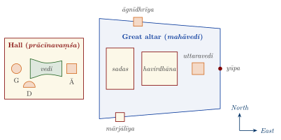
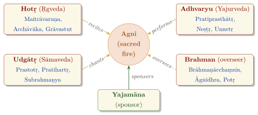

Chapter 8: The Śrauta Ritual: The Solemn Sacrifices¶
Invocatory Verse
ṛcāṃ tvaḥ poṣam āste pupuṣvān gāyatraṃ tvo gāyati śakvarīṣu
brahmā tvo vadati jātavidyāṃ yajñasya mātrāṃ vi mimīta u tvaḥ
One sits bringing the abundance of verses to flourish;
one sings a song in Śakvarī metres;
one, the brahman, tells the knowledge of what has come to be;
another measures out the measure of the sacrifice.
— Ṛgveda 10.71.11
8.1 Introduction¶
The verse above was read by Yāska (Nirukta 1.8) as a description of the four priests of the solemn sacrifice: the hotṛ, who recites the verses of the Ṛgveda; the udgātṛ, who sings the chants; the brahman, who knows the whole; and the adhvaryu, who “measures out” the ritual with his hands. These rites are called śrauta, “belonging to śruti”, because they are prescribed by the Veda itself, in contrast to the domestic (gṛhya) rites, whose authority the tradition traces to remembered custom (Chapter 9). A śrauta rite requires three sacred fires, professional priests from more than one Vedic school, and a sponsor (yajamāna) who has formally established those fires and whose wife takes part with him.
Earlier chapters have described parts of this system: the formulas of the Yajurveda (Chapter 3); the Agnicayana (Section 3.10); the chants of the Sāmaveda and the seven forms of the Soma sacrifice (Section 4.12); and the Brāhmaṇas’ explanations of the rites (Chapter 6). This chapter presents the śrauta ritual as a whole: its manuals, its ritual ground, the logic by which its rites are built from a few models, the principal rites in the order in which a sacrificer would undertake them, its history after the Vedic period, and the ways in which tradition and modern scholarship have tried to understand it. The standard modern surveys are those of Alfred Hillebrandt, Jan Gonda and C. G. Kashikar, and the detailed reconstructions of individual rites by Willem Caland and others (Hillebrandt 1897; Gonda 1977; Kashikar 1968).
8.2 The Śrautasūtras¶
The Brāhmaṇas explain the ritual but do not set it out in order; they assume that the reader already knows the procedure and comment on its meaning. The procedure itself was codified in the Śrautasūtras, manuals composed by the ritual schools of each Veda between about the sixth and the second century BCE, the oldest of them perhaps earlier. Each sūtra prescribes the rites from the point of view of the priest whose Veda it belongs to: the Ṛgvedic sūtras describe what the hotṛ and his assistants recite, the Sāmavedic sūtras what the chanters sing, and the Yajurvedic sūtras, the most comprehensive, what the adhvaryu does and says (Table 8.1).
| Veda | School | Śrautasūtras |
|---|---|---|
| Ṛgveda | Śākala; Kauṣītaki | Āśvalāyana; Śāṅkhāyana (Kauṣītaki) |
| Sāmaveda | Kauthuma, Rāṇāyanīya, Jaiminīya | Lāṭyāyana (Kauthuma); Drāhyāyaṇa (Rāṇāyanīya); Jaiminīya. The Ārṣeyakalpa of Maśaka lists the chants used in each rite |
| Black Yajurveda | Taittirīya | Baudhāyana, Vādhūla, Bhāradvāja, Āpastamba, Hiraṇyakeśin (Satyāṣāḍha), Vaikhānasa |
| Maitrāyaṇīya | Mānava, Vārāha | |
| Kaṭha | Kāṭhaka (known only from fragments) | |
| White Yajurveda | Vājasaneyin | Kātyāyana |
| Atharvaveda | Śaunaka | Vaitāna |
The manuals differ in age and style. The Baudhāyana Śrautasūtra, generally regarded as the oldest, is written in a discursive prose close to that of the Brāhmaṇas, and often reports the opinions of named teachers. Later sūtras, such as those of Āpastamba and Kātyāyana, are terse lists of rules, which presuppose general rules of interpretation (paribhāṣā) stated once at the beginning. The Vaitāna Sūtra of the Atharvaveda is late and largely derivative: it exists to support the Atharvavedic claim to the office of the brahman (Section 5.9). Because each sūtra belongs to a school, a sacrificer traditionally follows the sūtra of his own branch (svasūtra); the schools are discussed in Chapter 12.
Alongside the sūtras stand the mantra collections (the Saṃhitās), the Brāhmaṇas that explain the rites, and a large later literature of handbooks (prayoga, paddhati) that set out the actual sequence of acts and words for a particular school. It is largely through such handbooks, and through families of practising ritualists, that the rites have been performed in recent centuries (Smith 1987).
8.3 Fires, Priests and the Ritual Ground¶
8.3.1 Establishing the Fires¶
A householder becomes eligible for the śrauta rites by the agnyādheya, the “placing of the fires”. The Taittirīya Brāhmaṇa assigns the rite to different seasons for the different classes—spring for a Brahmin, summer for a Kṣatriya, autumn for a Vaiśya—and the fire is produced by friction, with two kindling sticks (araṇi) of the aśvattha tree, ideally one that has grown upon a śamī tree. Once established, the fires are to be maintained for life; the man who keeps them is an āhitāgni, “one who has set up the fires”, and at his death he is cremated in them (Section 9.5.4). If the fires are lost or the rite fails, they can be re-established (punarādheya).
The three fires are laid out on an east–west axis (Figure 8.1). The gārhapatya, the “householder’s fire”, is in the west and is round; from it the other fires are kindled and on it the offerings are cooked. The āhavanīya, the “fire for offering”, is in the east and is square; into it most oblations are poured. The dakṣiṇāgni, the “southern fire”, is semicircular and lies to the south; it is associated with the ancestors and with protection against hostile powers. The distance between the western and eastern fires varies with the class of the sacrificer: the sūtras give eight steps (prakrama) for a Brahmin, eleven for a Kṣatriya and twelve for a Vaiśya, numbers that match the syllables of the Gāyatrī, Triṣṭubh and Jagatī metres with which the classes are associated. Some schools add two further fires, the sabhya (“of the assembly hall”) and the āvasathya (“of the dwelling”), giving the “five fires” of the fullest form of the system.
Between the fires lies the vedi, a shallow, grass-strewn hollow in the ground, broad at its ends and narrow in the middle; the texts compare its shape to that of a woman, with “shoulders” to the east and “hips” to the west. The offerings are set down on it, and the earth dug from it is heaped to the north on the utkara, the place for discarded material. The geometry of the altars, and its codification in the Śulbasūtras, has been described in Section 3.10 and in Chapter 7.

8.3.2 The Priests and Their Texts¶
The number of priests depends on the rite. An iṣṭi, the simplest offering of cakes, milk or ghee, needs four: the adhvaryu, who acts; the hotṛ, who recites; the āgnīdh, who tends the fire and answers the adhvaryu’s calls; and the brahman, who watches in silence. An animal sacrifice adds two more, the maitrāvaruṇa, who directs the hotṛ, and the pratiprasthātṛ, the adhvaryu’s assistant. The Soma sacrifice requires the full set of sixteen, in four groups of four (Figure 8.2): the hotṛ, who recites the verses of the Ṛgveda, with the maitrāvaruṇa, acchāvāka and grāvastut; the adhvaryu, who performs the ritual actions with Yajurvedic formulas, with the pratiprasthātṛ, neṣṭṛ and unnetṛ; the udgātṛ, who sings the Sāmavedic chants, with the prastotṛ, pratihartṛ and subrahmaṇya; and the brahman, who oversees the rite in silence, with the brāhmaṇācchaṃsin, āgnīdhra and potṛ. The Atharvavedic schools later claimed the office of the brahman for themselves (Section 5.9). Some schools add a seventeenth, the sadasya, who supervises from the sadas, and several minor officiants such as the cup-bearers (camasādhvaryu).
Each group works from its own texts. The hotṛ and his assistants recite Ṛgvedic verses in prescribed sequences, the śastras, which are assembled from many hymns and are not simply the hymns of the Saṃhitā in their original order. The chanters sing sāmans from the song-books of their school, adapted (ūha) to the verses and occasions of the rite. The adhvaryu mutters Yajurvedic formulas as he acts and gives orders (praiṣa) to the other priests. The brahman, according to the Chāndogya Upaniṣad (4.17), repairs any fault in the rite with the three “utterances” bhūḥ, bhuvaḥ, svaḥ, as a goldsmith joins gold with a flux; his knowledge of the whole is the sacrifice’s protection.

The co-operation of the priests is regulated by fixed calls and responses. When an oblation is to be offered, the adhvaryu calls ā śrāvaya (“make [the gods] listen”), the āgnīdh answers astu śrauṣaṭ (“so be it, may they hear”), the adhvaryu instructs the hotṛ to recite the offering verse, and the hotṛ begins with ye yajāmahe (“we who worship”) and ends with the exclamation vauṣaṭ, at which the oblation is poured. Whatever their literal sense, these formulas work as signals that co-ordinate the priests, and their exact form is part of the knowledge that each school preserved.
8.3.3 The Sacrificer and His Wife¶
The sponsor, the yajamāna, is the beneficiary of the rite and pays the priests’ fees (dakṣiṇā). He must be a married twice-born man; the Śūdra is excluded, although the texts make a much-discussed exception for the chariot-maker (rathakāra), who may establish the fires in the rainy season. His wife (patnī) is a necessary participant. She has her own place near the gārhapatya, is girded with a cord at the start of the rite, looks at the melted butter, is present at the offerings to the wives of the gods (patnīsaṃyāja), and in the animal sacrifice washes the victim’s body. Stephanie Jamison has shown how much the ritual texts reveal about the wife’s role, which the Brāhmaṇas treat as both indispensable and dangerous (Jamison 1996). A widower, or a man whose wife cannot take part, faces real difficulties in continuing the rites, and the texts discuss substitutes.
8.3.4 The Priests’ Fee¶
Every śrauta rite ends with the giving of the dakṣiṇā, the fee for the priests. The word is usually explained as originally designating a productive cow, and cows remained the standard measure of the fee, with gold, garments, horses, chariots and, in the great royal rites, land and enormous herds. The Śatapatha Brāhmaṇa (2.2.2.6) explains the logic: there are two kinds of gods, the gods in heaven and the learned Brahmins who have studied the Veda, who are “human gods”; the oblation is given to the first, the fee to the second, and the sacrifice is complete only when both are satisfied. The fee was not a wage in the modern sense but a gift that the rite itself required, and the texts prescribe its amount and kind for each rite, from a single cow or a garment for a small offering to thousands of cows for a royal consecration.
The gift economy of the sacrifice is already visible in the Ṛgveda, where many hymns end with “praises of the gift” (dānastuti) celebrating a patron’s generosity in cattle, horses and slave women (see Volume 19, Vāṇijya and Samudra). Heesterman argued that the fee preserves the logic of an older system of exchange between rival patrons and their priests, in which giving and receiving created bonds and obligations (Heesterman 1993). The giving of all one’s possessions (sarvavedasa) was the fee of certain rites, and it is such a rite that opens the Kaṭha Upaniṣad, where the boy Naciketas watches his father give away worn-out cows in the name of total generosity and asks to whom he himself will be given. The scale of the fees also explains why the great rites were sponsored mainly by kings and wealthy patrons, and why inscriptions such as that of Nāneghāṭ record the fees as carefully as the rites themselves (Section 8.7).
8.4 The Logic of the System: Models and Variants¶
The śrauta ritual comprises hundreds of named rites, but it is not a loose collection. It is built from a small number of model rites (prakṛti) of which the others are variants (vikṛti). The new- and full-moon offerings are the model for all iṣṭis; the animal sacrifice (paśubandha) for all animal offerings; and the Agniṣṭoma for all Soma sacrifices. A variant rite is described only by its differences from its model, and everything that is not specified is carried over (atideśa): “the variant is performed like the model” (prakṛtivad vikṛtiḥ kartavyā) is the basic rule. The Mīmāṃsā school of philosophy built a large part of its theory of interpretation on the problems that this transfer raises—what exactly is transferred, what is modified, and what is dropped—and Jaimini’s Mīmāṃsāsūtra devotes several of its books to them (see Volume 3, Darśana Darpaṇa).
The rites are also nested. A Soma sacrifice contains several iṣṭis and animal offerings within it, each performed according to its own model, and the Agnicayana is in turn built round a Soma sacrifice. The resulting structures can be described as hierarchies of embedded units. Frits Staal, who studied the Agnicayana closely, compared them with the recursive structures of grammar and argued that the ritual is governed by rules of a syntactic kind (Staal 1989).
The tradition classifies the obligatory śrauta rites into seven haviryajñas (offerings of milk, ghee, grain and cakes, together with the animal sacrifice and the Sautrāmaṇī) and seven forms (saṃsthā) of the Soma sacrifice; the list appears in the Gautama Dharmasūtra (chapter 8) among the forty “sacraments” (saṃskāra), together with seven “cooked” domestic offerings. The seven Soma forms, from the Agniṣṭoma to the Aptoryāma, are distinguished mainly by the number of chants and are listed in Table 4.2. Soma rites are also classified by length: one-day rites (ekāha); rites of two to twelve pressing days (ahīna); and “sessions” (sattra) of twelve days or more, of which the longest commonly described is the year-long gavām ayana. In a sattra all the officiants are themselves sacrificers, and no fees are paid.
Table 8.2 sets out the regular rites in the order in which a sacrificer would normally take them up.
| Rite | When performed | Place in the system |
|---|---|---|
| Agnyādheya | Once, to establish the fires; repeated (punarādheya) if they fail | Precondition of all śrauta rites |
| Agnihotra | Every evening and morning for life | An independent daily rite |
| Darśapūrṇamāsa | At every new and full moon | Model of all iṣṭis |
| Āgrayaṇa | At the rice and barley harvests | An iṣṭi |
| Cāturmāsya | At the start of each of the three seasons | A series of iṣṭis |
| Nirūḍhapaśubandha | Once or twice a year | Model of all animal sacrifices |
| Agniṣṭoma | At least once, traditionally in spring | Model of all Soma sacrifices |
| Other Soma rites, Agnicayana, royal rites | For particular aims or persons | Variants of the Soma model |
The rites are tied to time. The new- and full-moon offerings require knowledge of the exact moment of the lunar phase, the seasonal rites and the establishment of the fires depend on the seasons, and the year-long sessions on a correct reckoning of the year with its intercalary month. The calendrical science of the Vedāṅga Jyotiṣa was composed, by its own account, to determine the proper times of the sacrifice (Section 7.6), and the Brāhmaṇas’ discussions of the year, the seasons and the lunar asterisms belong to the same practical concern.
8.5 The Regular Offerings¶
8.5.1 The Agnihotra¶
The agnihotra is the simplest and most frequent of the śrauta rites: an offering of hot milk into the āhavanīya, made every evening after sunset and every morning around sunrise, for as long as the sacrificer lives. It is the stock example of an obligatory (nitya) rite: “he offers the agnihotra as long as he lives” (yāvajjīvam agnihotraṃ juhoti). The milk is drawn from a cow milked for the purpose, heated on the gārhapatya and offered with a special ladle, with a short formula: in the evening “Agni is light, light is Agni, svāhā”, in the morning “Sūrya is light, light is Sūrya, svāhā” (VS 3.9). A second, silent oblation follows each.
The Brāhmaṇas devote surprisingly long discussions to this small rite. They debate whether the morning offering should be made before or after sunrise, and they interpret it as the means by which the sun, which “enters the fire” at sunset, is reborn each morning; by offering, the sacrificer takes part in sustaining the alternation of night and day. H. W. Bodewitz’s study of the agnihotra in the Brāhmaṇas, especially the Jaiminīya Brāhmaṇa, shows how much of the later theory of ritual, including the idea of the sacrifice as an internal act, grew out of reflection on this daily offering (Bodewitz 1976). The “agnihotra in the breaths” (prāṇāgnihotra), in which eating itself becomes the offering, is described in Section 6.6.
8.5.2 The New- and Full-Moon Offerings¶
The darśapūrṇamāsa is the model (prakṛti) of all iṣṭi offerings. Its central sequence on the day of offering is:
-
Prayājas — five fore-offerings of ghee
-
Principal oblations — cakes (puroḍāśa) and other offerings to Agni and other deities
-
Sviṣṭakṛt and Iḍā — the offering to Agni “who makes the offering well”, and the priests’ consumption of a portion
-
Anuyājas — three after-offerings
-
Sūktavāka and Śaṃyuvāka — concluding recitations
-
Patnīsaṃyājas — offerings to the wives of the gods, in the presence of the sacrificer’s wife
The rite takes two days at each new and full moon. The first is a day of preparation (upavasatha), on which the sacrificer and his wife observe restraints; at the new moon, a sacrificer who has already performed a Soma sacrifice also separates the calves from the cows so that the milk can be offered the next morning. On the second day the adhvaryu digs and strews the vedi, husks and grinds the rice or barley, and bakes the cakes (puroḍāśa) on potsherds: on eight potsherds for Agni, and for the second principal offering on eleven for Agni and Soma at the full moon and on twelve for Indra and Agni at the new moon.
The hotṛ’s part begins with the eleven “kindling verses” (sāmidhenī), recited as the fire is fed with sticks, with the first and last verses repeated three times to make fifteen. He then “chooses” Agni as the divine hotṛ by naming the ancestral seers of the sacrificer’s lineage (the pravara)—one of the places where the system of exogamous clans (gotra) enters the ritual. After the principal oblations, the priests and the sacrificer eat a share of the offering called iḍā, which is invoked as a goddess and identified with the cow and with nourishment, and the brahman receives a portion of his own. The rite ends with the offerings to the wives of the gods, in which the sacrificer’s wife takes part, and with the discarding of the remains. Because the darśapūrṇamāsa is the model of all iṣṭis, its every detail matters for the whole system, and the sūtras describe it first and at greatest length.
8.5.3 The Seasonal Offerings¶
The cāturmāsya, the “four-monthly” offerings, divide the year into three seasons of four months, each opened by a sacrifice on a full-moon day (Einoo 1988). The Vaiśvadeva, in spring, is offered to the All-Gods and many other deities. The Varuṇapraghāsa, at the beginning of the rains, is an expiatory rite to Varuṇa, the god who binds wrongdoers: figures of a ram and a ewe made of barley dough are offered, and the sacrificer’s wife is asked, in a striking episode of the Śatapatha Brāhmaṇa (2.5.2.20), to name any lovers she has had, since an unconfessed wrong would harm her family. The Sākamedha, in autumn, includes a great offering to the ancestors (mahāpitṛyajña) and the tryambaka offering of cakes to Rudra, made at a crossroads and outside the settlement, with a verse that is still among the best known of all Vedic mantras (VS 3.60, also RV 7.59.12):
The Tryambaka Verse — Vājasaneyi Saṃhitā 3.60
tryambakaṃ yajāmahe sugandhiṃ puṣṭivardhanam
urvārukam iva bandhanān mṛtyor mukṣīya māmṛtāt
We worship Tryambaka, the fragrant, who increases prosperity.
Like a cucumber from its stalk, may I be freed from death, not from immortality.
In its ritual setting the verse belongs to an offering meant to send the dangerous god away from the household; it later became the “death-conquering” (mṛtyuñjaya) mantra of Śaiva devotion. A fourth offering, the Śunāsīrīya, addressed to the ploughshare and the plough, closes the yearly cycle.
To these regular offerings belong the āgrayaṇa, the offering of the first fruits of the rice and barley harvests before the new grain may be eaten, and the independent animal sacrifice (nirūḍhapaśubandha), performed once or twice a year. In the animal sacrifice the victim, usually a goat, is bound to a wooden post (yūpa) and killed outside the vedi by suffocation, so that no blood is shed at the altar; the texts call the killing a “quieting” (saṃjñapana), and the hotṛ recites a long litany addressed to the slaughterers (the adhrigu formula). The texts’ unease about the killing, and the later replacement of animal victims, are discussed in Section 3.9. The omentum (vapā) is offered first, then prescribed portions of the body; the remainder is eaten by the priests.
8.6 The Soma Sacrifice Step by Step¶
The Agniṣṭoma, the model of all Soma sacrifices, lasts five days in its basic form and requires sixteen priests; it is outlined in Table 8.3.
| Day | Name | Principal Activities |
|---|---|---|
| 1 | Dīkṣā | Consecration of the sacrificer (yajamāna) and his wife; vows of restraint |
| 2–4 | Upasad days | Purchase of the Soma; the Upasad offerings (twice daily); building of the Soma altar (mahāvedī); animal offering on the fourth day |
| 5 | Sutyā (pressing day) | Soma pressed three times (morning, midday, evening); twelve chants (stotra) and twelve recitations (śastra); gifts to the priests (dakṣiṇā); concluding bath (avabhṛtha) |
Its full description in the sūtras runs to hundreds of pages; Caland and Henry’s reconstruction of it from the texts, published in 1906–07, remains the classic study (Caland and Henry 1906). The main sequence is as follows.
Choice of priests and consecration.
The sacrificer formally chooses (varaṇa) his sixteen priests, and the area of the sacrifice is prepared: the hall with its three fires and, to the east, the great altar (Figure 8.1). He then undergoes the consecration (dīkṣā). He is shaved, bathed and anointed, puts on a new garment and a black antelope skin, and receives a staff; he must keep his hands closed in fists, speak little, live on milk and, according to the Śatapatha, scratch himself only with a black antelope’s horn. The Aitareya Brāhmaṇa (1.3) explains the consecration as a rebirth: the consecrated man is an embryo, his hut the womb, his garment the caul. His wife is consecrated with him.
The purchase and reception of Soma.
The Soma plant is bought from a seller in a mock bargain: a young cow is led forward, its footprint is dug up and kept, the price is haggled over item by item, and in some texts the seller is struck and the payment taken back. The Soma is then carried on a cart to the sacrificial ground and received as a royal guest (ātithya). The priests and the sacrificer swear an oath of mutual loyalty, the tānūnaptra, by touching a dish of ghee together. On the days that follow, the upasad offerings (“sieges”) are made twice a day, and in many performances the pravargya, a rite in which a clay pot (mahāvīra) is heated until it glows and fresh milk is poured into it, so that a column of flame rises. The pravargya is regarded as secret and dangerous; its mantras and its explanation are transmitted in the Āraṇyakas (Taittirīya Āraṇyaka 4–5), and the Śatapatha Brāhmaṇa (14.1.1) tells how it restores the severed head of the sacrifice (Houben 1991).
The great altar.
During these days the great altar is measured out, the sadas and the shed for the Soma carts (havirdhāna) are built, and the fire is carried forward from the hall to a raised altar (uttaravedi) at the eastern end, which becomes the new āhavanīya; the old āhavanīya of the hall now serves as the gārhapatya. On the day before the pressing a he-goat is offered to Agni and Soma (agnīṣomīya), and water for the pressing (vasatīvarī) is drawn and kept overnight.
The pressing day.
Before dawn the hotṛ recites the long “morning litany” (prātaranuvāka). The Soma stalks are then crushed with stones on boards placed over sound-holes dug in the havirdhāna, mixed with water and strained through wool, and the juice is drawn into a series of cups (graha) dedicated to particular gods: Vāyu and Indra, Mitra and Varuṇa, the Aśvins, and others. The Soma is pressed three times in the day, at the morning, midday and third pressings (savana), each with its own offerings, chants and recitations. The day’s chanting begins outside the sadas with the bahiṣpavamāna stotra, for which the priests creep out in a line, each holding the one in front; the remaining chants are sung inside it.
The chants follow a fixed numerical plan. Each stotra is sung on a group of verses expanded by repetition to a set total (stoma); in the Agniṣṭoma the totals rise through the day from nine to fifteen, seventeen and finally twenty-one. Each stotra is answered by a śastra, recited by the hotṛ or one of his assistants. The rite takes its name from its last chant, the agniṣṭoma sāman, the “praise of Agni”. The priests’ fees, which in the texts consist chiefly of cows, are distributed at the midday pressing. At the third pressing the wives of the gods receive offerings, and the sacrificer’s wife has a part to play.
Conclusion.
The rite ends with the offering of a barren cow to Mitra and Varuṇa (anūbandhyā), the purificatory bath (avabhṛtha) in which the sacrificer, his wife and the implements stained with Soma are washed in flowing water, and concluding iṣṭis, after which the sacrificer returns to ordinary life.
Scholarly Note: What Was Soma?
The identity of the original Soma plant is unknown. Ephedra, which grows in the mountains of Afghanistan and Iran and is used in the Zoroastrian haoma rite, is the candidate most widely favoured; the fly agaric mushroom, proposed by R. Gordon Wasson in 1968 (Wasson 1968), and various other plants have also been suggested. The Brāhmaṇas already permit substitutes when true Soma cannot be had, and in modern performances a leafless creeper gathered in the hills, identified botanically as a species of Sarcostemma, is commonly used.
8.7 Longer Rites and Royal Rites¶
8.7.1 Sessions and the Ritual Year¶
The sattras extend the Soma sacrifice over many days. The year-long gavām ayana, the “course of the cows”, is built from standard blocks of six-day periods arranged symmetrically around a central day, the viṣuvat; its penultimate day is the mahāvrata, a festival with music, a swing for the hotṛ, ritual abuse and a mock combat (Table 14.4). Such sessions, performed by groups of consecrated men who all count as sacrificers, are probably the most archaic form of the Soma rite, and some scholars have connected them with the life of the vrātya bands mentioned in the Atharvaveda and Brāhmaṇas. In historical times they were rarely performed.
8.7.2 The Vājapeya¶
The vājapeya, the “drink of strength”, is a Soma sacrifice of the saṃsthā with seventeen chants, and the number seventeen pervades it: seventeen cups of Soma and seventeen of surā, seventeen animals for Prajāpati, seventeen drums and seventeen chariots. Its distinctive episodes are a chariot race, which the sacrificer is made to win, and the climbing of the sacrificial post: the sacrificer and his wife mount a ladder to its top and reach towards the sky before descending to be seated on a throne and sprinkled. The Śatapatha Brāhmaṇa (5.1.1) presents the rite as one that gives the status of paramount ruler (samrāj), higher than that of a king (rājan) consecrated by the rājasūya; it was open to Brahmins as well as Kṣatriyas.
8.7.3 The Rājasūya¶
The royal consecration, described in the Yajurveda Saṃhitās and the Śatapatha Brāhmaṇa, is not a single ceremony but a long series of rites spread over more than a year. Its principal episodes include:
-
Ratnināṃ haviṃṣi: offerings in the houses of the king’s “jewels” (ratnins)—officials and members of his household—marking their support;
-
Abhiṣeka: anointing of the king with waters gathered from many sources;
-
symbolic acts such as a cattle raid, a chariot drive and a game of dice, which the king is made to win.
J. C. Heesterman’s analysis of its Yajurvedic sources showed that its structure reproduces a cycle of conception, birth and growth, through which the king is ritually reborn, and that its contests—the cattle raid on a kinsman’s herd, the game of dice—preserve traces of an older, agonistic ritual in which the king’s position had to be won against rivals (Heesterman 1957). After the anointing, the hotṛ recites to the king the story of Śunaḥśepa (Aitareya Brāhmaṇa 7.13–18; Section 6.4). Theodore Proferes has traced how the imagery of these rites draws on the Ṛgvedic association between the sacred fire, the unity of the clans and the person of the ruler (Proferes 2007).
8.7.4 The Aśvamedha¶
The horse sacrifice, described in Vājasaneyi Saṃhitā 22–25, Śatapatha Brāhmaṇa 13 and the sūtras, was the most prestigious of the royal rites (Dumont 1927). A selected stallion was released in spring to wander for a year, guarded by an armed escort of young men; any territory it entered without resistance was claimed for the king. During the year the priests performed daily offerings, and a cycle of narratives (pāriplava ākhyāna) was recited over ten days and repeated throughout the year, each day devoted to a legendary king and a class of beings, before an audience of the king’s subjects (Śatapatha Brāhmaṇa 13.4.3). When the horse returned, a three-day Soma rite was held, during which the horse and many other animals were sacrificed. The priests exchanged riddles (brahmodya) about the nature of the world—“Who moves alone? … The sun moves alone” (VS 23.9–10)—and the chief queen lay beside the slain horse under a cover while the priests and the women of the court exchanged obscene verses, a fertility rite that later commentators found embarrassing. The texts’ interpretation identifies the horse with the cosmos and with Prajāpati, and the Bṛhadāraṇyaka Upaniṣad opens by describing the dawn as the head of the sacrificial horse (BU 1.1.1).
The aśvamedha remained a claim to sovereignty long after the Vedic period. The Ayodhyā inscription of Dhanadeva describes the Śuṅga king Puṣyamitra (2nd century BCE) as the performer of two horse sacrifices; the Nāneghāṭ inscription of the Sātavāhana queen Nāyanikā (1st century BCE) lists the śrauta rites performed by the royal family, including the aśvamedha and the rājasūya, with the fees given; Samudragupta (4th century CE) struck gold coins showing a horse before a sacrificial post, and his successors’ inscriptions describe him as the restorer of the long-neglected horse sacrifice; the Vākāṭaka king Pravarasena I is styled the performer of four, and the Cālukya king Pulakeśin I is recorded as having performed one in the sixth century. These performances show the śrauta ritual being used, as it was in the Kuru realm, to proclaim a king’s power (see also Volume 19, Vāṇijya and Samudra, on the coins).
8.7.5 Other Special Rites¶
The sautrāmaṇī, offered to Indra “the good protector” (sutrāman), the Aśvins and Sarasvatī, uses cups of surā, a fermented grain drink, alongside milk; it is performed independently, or as a remedy for one who has vomited Soma, or as part of the royal consecration and the Agnicayana. The “human sacrifice” (puruṣamedha) of Vājasaneyi Saṃhitā 30–31 consists, in the Śatapatha’s account, of a long list of human “victims” of every occupation who are bound and then released, and its historicity as an actual killing is doubtful. The Agnicayana, the greatest of the composite rites, has been described in Section 3.10.
8.8 The Indo-Iranian Background¶
Several elements of the śrauta ritual are older than the Veda itself. The Zoroastrian high liturgy, the Yasna, which is still performed by Parsi priests in India, offers the closest comparison. It is conducted by two priests, the chief of whom is called the zōt (Avestan zaotar, cognate with Vedic hotṛ); it centres on the pounding of twigs of the haoma plant (Vedic soma) with water and milk; it requires a bundle of twigs, the barsom, comparable to the Vedic bundle of grass (veda) and strewing (barhis); and it is performed before a ritual fire. The Old Avestan Gāthās themselves are embedded in the text of the Yasna, much as Ṛgvedic hymns are embedded in the śrauta liturgy (Boyce 1979). The Indo-Iranian vocabulary listed in Table 1.3—yajña/yasna, hotṛ/zaotar, atharvan/ā\(\theta\)ravan—thus corresponds to shared ritual practice and not only to shared words. What is distinctively Indian is the vast elaboration of the ritual in the Brāhmaṇa period, the division of labour between priests of different Vedas, and the fire altar of the Agnicayana, which has no Iranian counterpart.
8.9 Interpreting the Sacrifice¶
The tradition itself offered several kinds of explanation. The Brāhmaṇas interpret each act through correspondences (bandhu) between the ritual, the cosmos and the person, and present the sacrifice as the means by which Prajāpati, exhausted after creation, is reassembled and the world renewed (Chapter 6). The Āraṇyakas and Upaniṣads internalised it, treating breath, speech and thought as the true sacrifice. The Mīmāṃsā school took the opposite course: it held that the Vedic injunction—the stock example is “one who desires heaven should sacrifice with the Jyotiṣṭoma”—is authoritative in itself, that the rite produces an unseen potency (apūrva) which bears fruit later, and that the gods named in the mantras matter chiefly as recipients designated by the text (see Volume 3, Darśana Darpaṇa).
Modern scholarship has been equally divided. Henri Hubert and Marcel Mauss, in their classic essay on sacrifice, drew heavily on the Vedic animal sacrifice to describe sacrifice as a mediation between the sacred and the profane through a victim (Hubert and Mauss 1964). Heesterman argued that the classical śrauta ritual is the product of a deliberate reform: an older, agonistic sacrifice, in which rival patrons competed in feasts and contests, was transformed into a closed, individual rite in which the sacrificer has no opponent and every act is fixed by rule (Heesterman 1993). Staal went further, arguing in a celebrated article that ritual is “pure activity” without meaning, governed by rules that can be studied like the rules of grammar, and that the Brāhmaṇas’ explanations are later and secondary (Staal 1979, 1989). Critics have replied that the explanations are as old as the codification of the rites and that ritual cannot be separated from what its participants believe it does. These debates show at least that the śrauta ritual is one of the best-documented ritual systems in the world, and one that has shaped the general theory of ritual.
8.10 The Śrauta Ritual after the Vedic Period¶
After the Vedic period the śrauta rites became the preserve of a small number of specialist families, while domestic rites, temple worship and devotion became the centre of most people’s religious life. They never ceased, however. Medieval land grants frequently describe their Brahmin recipients as performers of Soma sacrifices, and family names in many parts of India still record the ritual status of an ancestor: Agnihotri, Dīkṣit (one consecrated for a Soma rite), Somayājī or Somayājulu, Vājapeyī, Yājñik. Among the Nambūdiri Brahmins of Kerala, a man who has performed a Soma sacrifice is styled Somayājippāṭ, and one who has performed the Agnicayana Akkittiri, from Sanskrit agnicit.
In the twentieth century śrauta traditions were found chiefly in Kerala, coastal Andhra Pradesh, Tamil Nadu, Karnataka and Maharashtra, and occasionally elsewhere. C. G. Kashikar and Asko Parpola surveyed them for Staal’s Agni (Staal 1983), and David Knipe has recorded the lives and practice of families of āhitāgnis in the Godavari delta of Andhra Pradesh (Knipe 2015). The twelve-day Atirātra–Agnicayana performed by Nambūdiri ritualists at Panjal, Kerala, in April 1975, filmed and documented by Staal and his colleagues, was the first such rite to be recorded by scholars in this detail; at the insistence of local opinion the goats were replaced by figures made of rice flour, a substitution that itself has a long history in the tradition.
In this combined rite the Agnicayana is built round an Atirātra, a Soma sacrifice whose chanting continues through the night. Over the twelve days the ritualists built the five-layered, bird-shaped brick altar described in Section 3.10, performed the pravargya, chanted and recited the Śatarudrīya and the other litanies of the rite, and on the final night completed the cycle of chants; at the end, following Kerala practice, the ritual enclosure was set on fire. Staal’s two-volume publication of the performance, with contributions by many specialists, recordings of the recitations and photographs, and the film Altar of Fire made with Robert Gardner, remain the fullest documentation of a Vedic rite in performance. Kerala families have performed further Atirātra–Agnicayana rites in later decades. In all these communities the rites survive through a few families, depend on patronage and on the long training of the priests, and are, like the recitation traditions on which they rest, under threat (Chapter 12).
8.11 Summary¶
What makes the śrauta ritual distinctive is less its scale than its system. A few model rites, endlessly varied and nested inside one another, generate hundreds of ceremonies, and the rules for transferring them from model to variant became the starting point of Indian hermeneutics in the Mīmāṃsā. The same rites served very different ends: the daily offering of a householder, the sovereignty of a king, the livelihood of priestly families. That is why they could survive the end of the Vedic period as a royal claim in inscriptions and on coins, and survive the end of royal patronage as the inherited practice of a few families, whose performances have in turn made the system one of the best documented in the comparative study of ritual.
Closing Verse
iyaṃ vediḥ paro antaḥ pṛthivyā ayaṃ yajño bhuvanasya nābhiḥ
ayaṃ somo vṛṣṇo aśvasya reto brahmāyaṃ vācaḥ paramaṃ vyoma
This altar is the farthest end of the earth; this sacrifice is the navel of the world;
this Soma is the seed of the stallion;
this sacred formulation is the highest heaven of speech.
— Ṛgveda 1.164.35